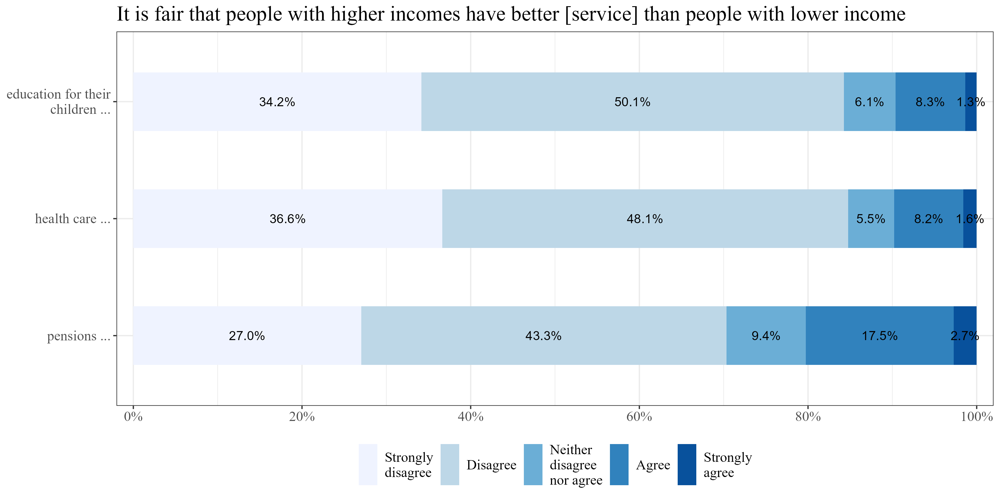
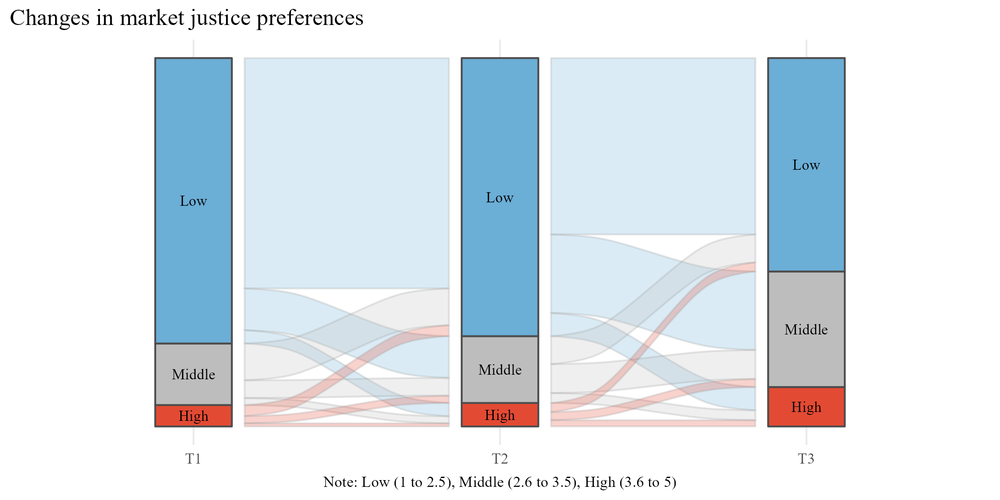
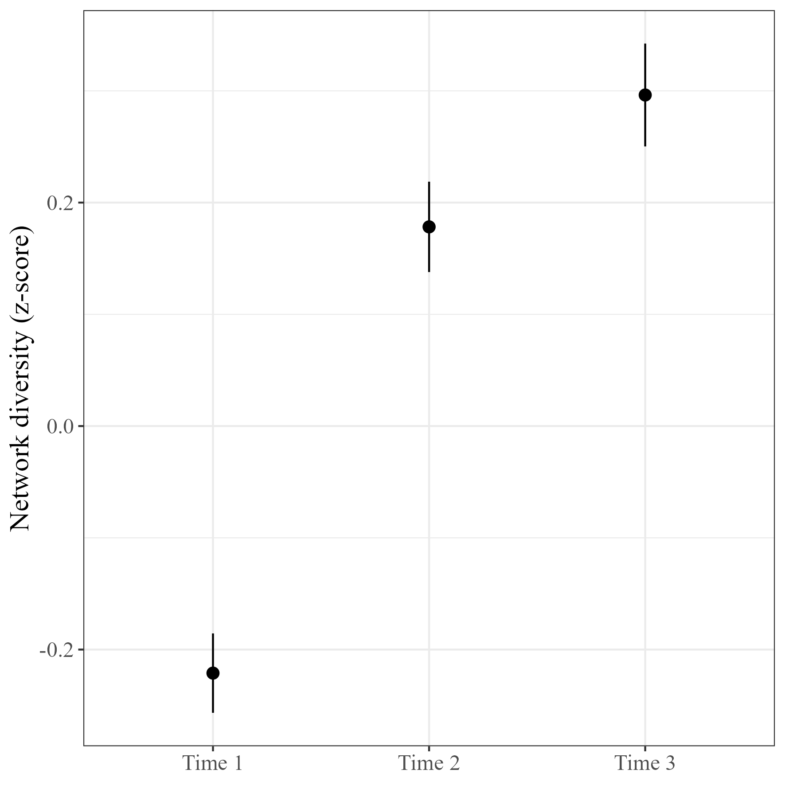

Methods
Data
ELSOC (COES): representative panel of Chile’s urban adult population, using probabilistic, stratified, cluster, and multistage sampling in large and small cities
Period: three waves (2016, 2018 and, 2023)
Attrition 2016→2023: ~ 40%
Analytical sample (3 waves):
- N = 6,562 observations nested in
- N = 2,884 individuals
Methods
Multilevel Between-Within regression (Schmidt-Catran, 2016; Singer & Willett, 2009)
Panel structure: repeated observations nested within individuals
Between effects (BE) capture how individuals who differ in their average level of a predictor (\(\beta_B \bar{x}_i\)) differ from each other in the outcome.
Within effects (WE) capture how deviations from an individual’s own mean \(\beta_W \bigl(x_{it} - \bar{x}_i\bigr)\) are associated with changes in the outcome over time.
Equation:
\[\begin{aligned} y_{it} &= \beta_0 + \beta_W \bigl(x_{it} - \bar{x}_i\bigr) + \beta_B \bar{x}_i + \boldsymbol{\gamma}^\top \mathbf{z}_i + u_i + \varepsilon_{it}, \\ u_i &\sim \mathcal{N}(0, \sigma_u^2), \quad \varepsilon_{it} \sim \mathcal{N}(0, \sigma^2). \end{aligned}\]
I. Market justice preferences
In this study:
- The Cronbach alpha is close to 0.8 in all time points (α1 =.82, α2=.86, α3=.83)
- Single indicator based on the combination of the three items
Higher values represent greater support for market justice.
I. Market justice preferences

III. Network diversity index

Studies recommend using a single dimension to more accurately capture the network attribute (Sapin et al., 2020;Otero & Mendoza, 2023).
PCA*:
- Extensivity (1 – 13): degree of variety as the total number of known occupations.
- Generalized Entropy (0 – 1): degree of balance across groups based on the number of acquaintances in each occupation.
This strategy consider both the possible ties to the available occupations (Variety) and how these ties are distributed across each group (Balance) (Koopmans & Schaeffer, 2015).
*Note: ~90% of explained variance